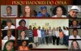
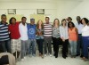
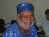

Menu Principal
Home
Sobre o OPAA
Pesquisadores
Bolsistas e Técnicos
Bolsistas
Técnicos
Comissões institucionais
Fotos
Publicações
Contato
 A Panorâmica – UFRRJ
 Abraço Pesquisadores
Adilson Pereira dos Santos - UFOP
Ahyas Siss - Coordenador - UFRRJ
Alexandre do Nascimento - FAETEC
Ângela Pace
Cláudio Santos - UFMG
Cleyde Amorim - UFES
Ele Semog - Ceap
Fabiane Aparecida - Bolsista PIBIC UFRRJ
Marize Conceição – Forum Diversidade RJ
Marluce De Souza Oliveira Lima – UFRRJ
 Otair Fernandes – UFRRJ
Priscila Reis – Proext – UFRRJ
Ricardo Dias da Costa – UFRRJ
Rosana Monteiro – UFSCar – UFRRJ
Sérgio – UFES